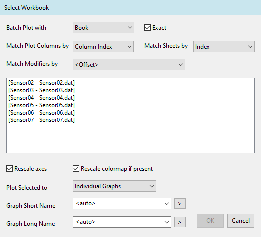
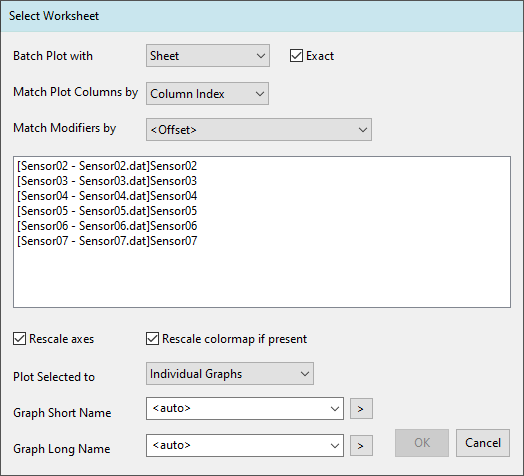
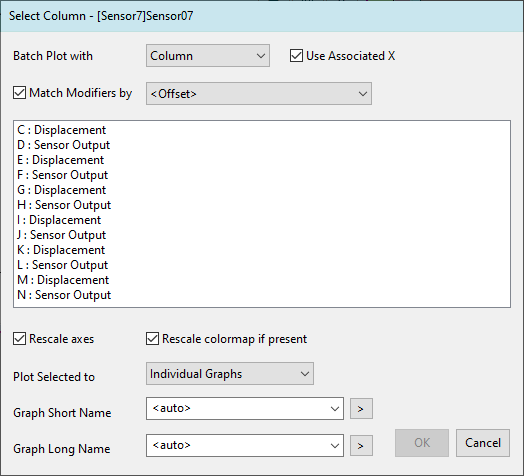
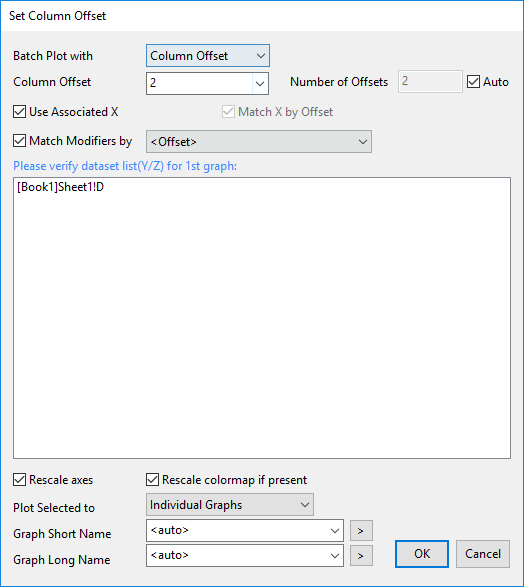

Stapelzeichnen
Graphing-Batch-Plotting
Origin bietet mehrere Möglichkeiten, benutzerdefinierte Diagrammanpassungen mit neuen Daten erneut zu verwenden:
- Benutzerdefinierte Diagramme als Diagrammvorlagen speichern;
- Benutzerdefinierte Einstellungen als Diagrammdesigns speichern;
- Formate aus einem Diagramm kopieren und in andere Diagramme einfügen;
- Stapelzeichnen mit Hilfe eines festgelegten Diagramms mit neuen Datensätzen;
- Verwenden von XY/Arbeitsblatt ändern im Kontextmenü.
Diagrammvorlagen und -designs erfordern das Speichern der Anpassungen in einer externen Datei, während Formate kopieren/einfügen und Stapelzeichnen das nicht tun. Jede Methode ist für einen anderen Workflow besser geeignet. Das hier erläuterte Stapelzeichnen ist besonders effizient, wenn Sie ein benutzerdefiniertes Diagramm über mehrere Datensätze, deren Anordnung die gleiche Struktur haben, duplizieren wollen.
Unterstützte Diagrammtypen und Datenanforderungen
- 2D-/3D-/Konturdiagramme
Hinweis: Für die meisten der gruppierten 2D-Diagramme, die über das Menü Zeichnen erstellt wurden, werden die Gruppierungsinfospalten als Modifizierer- und nicht als Datenspalten behandelt.
- Beim Duplizieren mit neuen Spalten sollte jede Spalte eine Diagrammzuordnung von Y (für 2D) haben bzw. Z (für 3D oder Kontur) und sich in dem gleichen Arbeitsblatt befinden.
- Beim Duplizieren mit neuen Blättern sollte jedes Blatt genau die gleiche Spaltenstruktur haben.
- Beim Duplizieren mit neuen Mappen sollte jede Mappe genau die gleiche Blatt- und Spaltenstruktur haben.
Dialog Stapelzeichnen
- Klicken Sie mit der rechten Maustaste auf die Diagrammtitelleiste und wählen Sie Stapelzeichnen oder klicken Sie auf die Schaltfläche Stapelzeichnen
 auf der Symbolleiste Standard.
auf der Symbolleiste Standard.
- Im aufgerufenen Dialog

- Stapelzeichnen für: Legen Sie das/die Diagramm/e fest, deren Anpassungen Sie für neue Zeichnungen erneut verwenden wollen. Siehe Einzelheiten im Abschnitt "Aus Diagramm oder mehreren Diagrammen duplizieren“.
- Stapelzeichnen mit: Legen Sie die neuen zu zeichnenden Daten fest. Legen Sie dann fest, wie der Datensatz mit dem Originaldatensatz abgeglichen werden soll - durch Festlegen von Zeichenspalten stimmen überein mit/Blätter stimmen überein mit/Modifizierer stimmen überein mit. Siehe Einzelheiten im Abschnitt "Datensätze abgleichen".
- Verfügbare Datensätze werden im mittleren Listenfeld aufgeführt. Wählen Sie einen oder mehrere Datensätze zum Zeichnen.
- Ausgewählte zeichnen in: Legen Sie fest, wo die neuen Zeichnungen ausgegeben werden sollen. Siehe Einzelheiten im Abschnitt "Ausgabeeinstellungen für neue Zeichnungen".
- Klicken Sie auf OK, um neue Diagramm zu erzeugen.
Aus aktuellem Diagramm oder mehreren Diagrammen duplizieren
- Wählen Sie in der Auswahlliste Stapelzeichnen für:

| Aktive Seite |
Die Anpassungen des aktuellen Diagramms werden verwendet, um neue Diagramme zu zeichnen. |
Alle im aktiven Ordner/
Alle im aktiven Ordner (Rekursiv)/
Alle im aktiven Ordner (Offen)/
Alle im aktiven Ordner (Eingebettete einschließen) |
Alle Diagrammfenster werden durchlaufen in- Aktiver Ordner: Unterordner nicht einschließen
- Aktiver Ordner (Rekursiv): Unterordner einschließen
- Aktiver Ordner (Offen): Nur offene Diagrammfenster einschließen
- Aktiver Ordner (Eingebettete einschließen): Eingebettete Diagramme einschließen
Jedes Diagramm wird mit abgeglichenen neuen Datensätzen dupliziert.
|
| Alle im Projekt |
Alle Diagrammfenster im gesamten Projekt werden durchlaufen und jedes Diagramm wird mit abgestimmten neuen Datensätzen dupliziert. |
| Festgelegt |
Spezifische Diagrammfenster im Projekt werden manuell ausgewählt und jedes mit abgeglichenen neuen Datensätzen dupliziert. |
Datensätze abgleichen

Stapelzeichnen mit Mappe
Wenn alle Zeichnungen im ursprünglichen Diagramm aus einer Arbeitsmappe stammen, wählen Sie Mappe in der Auswahlliste Stapelzeichnen mit, um das Diagramm mit anderen neuen Arbeitsmappen zu duplizieren.

Konfigurieren Sie die folgenden Elemente der Übereinstimmungsbedingungen.
| Genaue Datenstruktur |
Wenn dieses Kontrollkästchen aktiviert ist (Standard), werden nur Mappen mit genau dem gleichen Blatt und der gleichen Spaltenstruktur als Quelle zum Zeichnen verwendet. Wenn die Mappe zusätzliche Blätter oder Spalten als die Quelle enthält, werden die Zusätzlichen ignoriert. Wenn die Mappe weniger Blätter enthält als erforderlich, um das Diagramm zu zeichnen, wird die Mappe ausgefiltert. Wenn dies deaktiviert ist, werden Blätter mit der Mindestanzahl der erforderlichen Spalten eventuell gezeigt, abhängig von der Option Zeichenspalten stimmen überein mit (siehe nächsten Abschnitt).
|
Zeichenspalten stimmen überein mit/
Blätter stimmen überein mit |
Entscheiden Sie, mit was das Blatt in der Arbeitsmappe übereinstimmen soll - nach Langname, Kurzname oder Index des Arbeitsblatts, und mit was die Zeichenspalten übereinstimmen sollen - nach Langname, Kurzname oder Spaltenindex der Quellarbeitsmappe. |
| Modifizierer stimmen überein mit |
Legen Sie fest, mit was die Modifizierer übereinstimmen sollen, wenn das ursprüngliche Diagramm Gruppierungsinfos verwendet, um z. B die Symbolfarbe oder den Linienstil abzubilden. Hier folgt die Standardauswahl dem Bedienelement Modifizierer stimmen überein mit auf der Registerkarte Allgemeines des Dialogs Details Zeichnung. |
Stapelzeichnen mit Blatt
Wenn alle Zeichnungen im ursprünglichen Diagramm aus einem Arbeitsblatt stammen, wählen Sie Blatt in der Auswahlliste Stapelzeichnen mit, um das Diagramm mit anderen neuen Arbeitsblättern zu duplizieren.

Konfigurieren Sie die folgenden Elemente der Übereinstimmungsbedingungen.
| Genaue Datenstruktur |
Wenn dieses Kontrollkästchen aktiviert ist (Standard), werden nur Blätter mit genau der gleichen Spaltenstruktur als Quelle zum Zeichnen verwendet. Wenn das Blatt zusätzliche Spalten als die Quelle enthält, werden die Zusätzlichen ignoriert. Wenn das Blatt weniger Spalte enthält als erforderlich, um das Diagramm zu zeichnen, wird das Blatt ausgefiltert. Wenn dies deaktiviert ist, werden Blätter mit weniger Spalten als die Mindestanforderung eventuell gezeigt, abhängig von der Option Zeichenspalten stimmen überein mit (Sie wollen zum Beispiel mehr Zeichnungen zum ursprünglichen Diagramm hinzufügen).
|
| Zeichenspalten stimmen überein mit |
Entscheiden Sie, mit was das Blatt in der Arbeitsmappe übereinstimmen soll - nach Langname, Kurzname oder Index des Arbeitsblatts, und mit was die Zeichenspalten übereinstimmen sollen - nach Langname, Kurzname oder Spaltenindex der Quellarbeitsmappe. |
| Modifizierer stimmen überein mit |
Legen Sie fest, mit was die Modifizierer übereinstimmen sollen, wenn das ursprüngliche Diagramm Gruppierungsinfos verwendet, um z. B die Symbolfarbe oder den Linienstil abzubilden. Hier folgt die Standardauswahl dem Bedienelement Modifizierer stimmen überein mit auf der Registerkarte Allgemeines des Dialogs Details Zeichnung. |
Stapelzeichnen mit Spalte
Wenn alle Zeichnungen im ursprünglichen Diagramm aus einem Arbeitsblatt stammen und sich alle neuen Spalten (Y-Spalten für 2D-Diagramm und Z für 3D-Diagramm oder -Kontur), die Sie zeichnen möchten, sich auch im gleichen Arbeitsblatt befinden, wählen Sie Spalte in der Auswahlliste Stapelzeichnen mit, um das Diagramm mit weiteren neuen Arbeitsblättern zu duplizieren.

Konfigurieren Sie die folgenden Elemente der Übereinstimmungsbedingungen.
| X/Fehler-Abbildungsmethode |
Wählen Sie, wie die X- bzw. Fehlerspalte für die duplizierten Diagrammen ausgewählt werden soll.
|
| Modifizierer stimmen überein mit |
Legen Sie fest, mit was die Modifizierer übereinstimmen sollen, wenn das ursprüngliche Diagramm Gruppierungsinfos verwendet, um z. B die Symbolfarbe, den Linienstil oder andere Diagrammeigenschaften abzubilden. Hier folgt die Standardauswahl dem Bedienelement Modifizierer stimmen überein mit auf der Registerkarte Allgemeines des Dialogs Details Zeichnung. Es wird sehr empfohlen, <Versatz> bei Stapelzeichnen mit Spalte auszuwählen. Die Modifizierer werden nach dem gleichen Spaltenversatz aus der aktuellen XY-Spalte wie im ursprünglichen Diagramm ausgewählt (d. h., wie weit die Modifiziererspalte von ihrem XY verschoben ist). Ansonsten sorgt das Verwenden der Spaltenbeschriftung (z. B. Langname oder Kommentar) dafür, dass die Diagrammeigenschaften immer auf die ersten geeigneten Spalten im Arbeitsblatt abgebildet werden.
|
Stapelzeichnen mit Spaltenversatz
Wenn die Spalten, die Sie zeichnen möchten, einen festgelegten Versatz von den Quellspalten der ursprünglichen Diagramme haben, wählen Sie Spaltenversatz in der Auswahlliste Stapelzeichnen mit, um das Diagramm mit neuen Spalten zu duplizieren.

 | Spalte vs. Spaltenversatz
- Spalte macht es erforderlich, dass alle Spalten aus dem gleichen Blatt stammen. Es ist ein effizientes Hilfsmittel, wenn Spalten die gleichen Beschriftungen teilen (z. B. Langname oder Kommentare) oder für XYYY... die Spaltenstruktur.
- Spaltenversatz ist dagegen flexibler. Spalten müssen nicht aus dem gleichen Blatt stammen. Wenn das ursprüngliche Diagramm zum Beispiel zwei Zeichnungen aus verschiedenen Blättern hat und Sie das Diagramm mit den nachfolgenden Spalten in beiden Blättern duplizieren möchten, wählen Sie Stapelzeichnen mit = Spaltenversatz und Spaltenversatz = 2.

|
Konfigurieren Sie die folgenden Elemente der Übereinstimmungsbedingungen.
| Versatz mit Zielspalte festlegen |
Aktivieren Sie diese Option, um den Spaltenversatz intelligent zu bestimmen. Das Listenfeld zeigt dann die verfügbaren Spalten im Quellblatt an. Wählen Sie die Spalte(n) für das erste duplizierte Diagramm, und die Anzahl der Versätze wird entsprechend aktualisiert. Deaktivieren Sie diese Option, um den Spaltenversatz manuell festzulegen. Das Listenfeld zeigt dann die Spalte(n) für das erste duplizierte Diagramm.
|
| Spaltenversatz |
Legen Sie fest, wie weit neue Spalten von den Quellspalten verschoben werden sollen. "+" zählt rechts, "-" zählt links. Angenommen, dass Quellarbeitsblatt enthält z. B. die Spalten A-G mit der Diagrammzuordnung XYY... und das Originaldiagramm verwendet die Y-Spalten D und E. Spaltenversatz = +2 zeichnet die Spalten F und G; Spaltenversatz = -2 zeichnet die Spalten B und C. |
| Anzahl der Versätze |
Legen Sie die Gesamtanzahl der Sätze für das Stapelzeichnen fest. Aktivieren Sie Auto (Standard), um mit den folgenden Regeln automatisch zu berechnen:- Wenn Verbundene X suchen deaktiviert ist und X stimmt nach Versatz überein aktiviert ist, stellen Sie sicher, dass jeder Satz seine eigene X-Spalte hat.
- Wenn Modifizierer stimmen überein mit = <Versatz>, stellen Sie sicher, dass jeder Satz seine eigene Modifiziererspalte hat.
Deaktivieren Sie Auto, um manuell einen kleineren Wert einzugeben. Angenommen, das Originaldiagramm verwendet die Y-Spalten B und C. Spaltenversatz = +2 und Anzahl der Versätze = 3 duplizieren das Diagramm mit den neuen Y-Spalten D und E, F und G sowie H und I.
|
| X/Fehler-Abbildungsmethode |
Wählen Sie, wie die X- bzw. Fehlerspalte für die duplizierten Diagrammen ausgewählt werden soll.
|
| Modifizierer stimmen überein mit |
Legen Sie fest, mit was die Modifizierer überstimmen sollen, wenn das ursprüngliche Diagramm Gruppierungsinfos verwendet, um z. B. die Symbolfarbe, den Linienstil oder andere Diagrammeigenschaften abzubilden. Die Standardauswahl folgt dem Element Modifizierer stimmen überein mit auf der Registerkarte Allgemeines des Dialogs Details Zeichnung. Beachten Sie, wenn Modifizierer stimmen überein mit = <Versatz> ausgewählt ist, wird der festgelegte Spaltenversatz auch auf Modifizierer angewendet. Wenn Modifizierer stimmen überein mit auf eine Spaltenbeschriftung gesetzt ist (z. B. Langname oder Kommentar), werden die Diagrammeigenschaften immer auf die ersten geeigneten Spalten im Arbeitsblatt abgebildet.
|
Ausgabeeinstellungen für neue Zeichnungen

| Achsen neu skalieren |
Aktivieren Sie diese Option (Standard), um die Achsen neu zu skalieren und die neu hinzugefügten/erstellten Zeichnungen zu zeigen. Deaktivieren Sie es, um die Achsenskalierung des ursprünglichen Diagramms zu verwenden. |
| Farbabbildung ggf. neu skalieren |
Aktivieren Sie diese Option (Standard), um die Farbabbildung neu zu skalieren und den vollen Farbbereich für neue Zeichnungen zu zeigen. |
| Ausgewählte zeichnen in |
Legen Sie fest, wo die neuen Zeichnungen ausgegeben werden sollen:- Ursprüngliches Diagramm
Neue Zeichnungen werden zum ursprünglichen Diagrammfenster hinzugefügt. Beachten Sie, wenn das ursprüngliche Diagramm mehrere Layer hat, dass neue Zeichnungen entsürechend der Quellstruktur von jedem Layer hinzugefügt werden.
- Einzelne Diagramme
Jede Zeichnung wird in einem individuellen Diagrammfenster ausgegeben.
- Ein neues Diagramm:
Alle neuen Zeichnungen werden in einem einzelnen neuen Diagrammfenster ausgegeben.
- Neuer Layer des ursprünglichen Diagramms
Alle neuen Zeichnungen werden als zusätzliche Layer im ursprünglichen Diagramm ausgegeben. Beachten Sie, wenn ein ursprüngliches Diagramm einen einzelner Layer mit mehreren Zeichnungen hat, dass die Zeichnungen als eine Einheit behandelt werden und jeder Layer die gleiche Struktur repliziert.
Layer werden in einem Layout Anzahl der Zeilen X Anzahl der Spalten angeordnet.
|
| Diagrammkurzname |
Definieren Sie den Kurznamen für neue Diagramme vor. Verfügbar, wenn Ausgewählte zeichnen in nicht auf Ursprüngliches Diagramm gesetzt ist.- Die Standardeinstellung <auto> legt den Kurznamen Graphn fest, wobei n ein Sequenzindex ist.
- Formatzeichenketten und Labtalk-Skripte werden unterstützt. Notationen und feste Zeichenketten können nach Belieben kombiniert werden. Klicken Sie auf die Schaltfläche , um ein Bearbeitungsfeld mit einer Liste häufig verwendeter Notationen und Beispielen aufzurufen.
|
| Diagrammlangname |
Definieren Sie den Langnamen für die neuen Diagramme vor. Verfügbar, wenn Ausgewählte zeichnen in nicht auf Ursprüngliches Diagramm gesetzt ist.
- Die Standardeinstellung <auto> legt den Langnamen fest als
- "Dupliziert mit" + Quellarbeitsmappe und Blattname, wenn Stapelzeichnen mit Mappe/Blatt ausgewählt ist,
- Ursprünglicher Diagrammname + "-Copy", wenn Stapelzeichnen mit Spalte/Spaltenversatz ausgewählt ist.
Formatzeichenketten und Labtalk-Skripte werden unterstützt. Notationen und feste Zeichenketten können nach Belieben kombiniert werden. Klicken Sie auf die Schaltfläche , um ein Bearbeitungsfeld mit einer Liste häufig verwendeter Notationen und Beispielen aufzurufen.
|